상담 후기
* 모든 상담 후기는 내담자의 동의하에 업로드 됩니다.
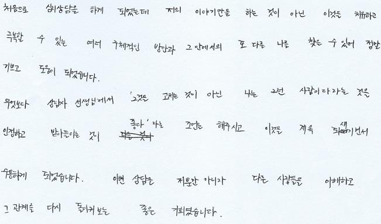
처음으로 심리상담을 하게 되었는데 저의 이야기만을 하는 것이 아닌 이것을 치유하고 극복할 수 있는 여러 구체적인 방안과 그 안에서의 또 다른 나를 찾을 수
있어 정말 기쁘고 도움이 되었습니다.
무엇보다 상담사 선생님께서 '그것을 고치는 것이 아닌 나는 그런 사람이다'라는 것을 인정하고 받아들이는 것이 좋다고 조언을 해주시고 이것을 계속 되새기면서
수용하게 되었습니다.
이번 상담은 저뿐만 아니라 다른 사람들을 이해하고 그 관계를 다시 돌이켜보는 좋은 기회였습니다.
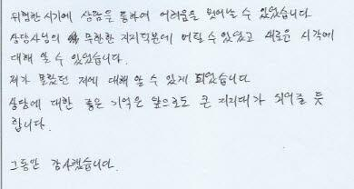
위험한 시기에 상담을 통하여 어려움을 벗어날 수 있었습니다. 상담사 님의 무한한 지지 덕분에 버틸 수 있었고 새로운 시각에 대해 알 수 있었습니다. 제가
몰랐던 저에 대해 알 수 있게 되었습니다. 상담에 대한 좋은 기억은 앞으로도 큰 지지대가 되어줄 듯 합니다. 그동안 감사했습니다.
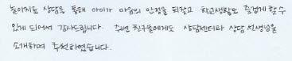
놀이치료 상담을 통해 아이가 마음의 안정을 되찾고 학교 생활도 즐겁게 할 수 있게 되어 감사드립니다. 주변 친구들에게도 상담 센터와 상담 선생님을 소개하며
추천하였습니다.
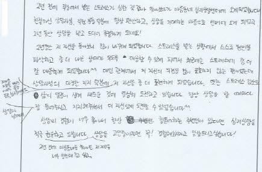
2년 전에 직장에서 받은 스트레스가 심한 것 같아 찾아보다가 마음동네심리상담센터에 오게 되었습니다. 친절하신 상담사님, 직원 분들 덕분에 항상 편안하고,
상담을 기대하는 마음으로 센터에 오게 되었고 2년 동안 상담을 받고 드디어 종결하게 되네요!
2년 동안 저 자신을 돌아보니 많이 바뀌게 되었습니다.
저는 스트레스를 받는 상황에서 스스로 원인을 파악하고 좀 더 나은 상태가 되도록 대응할 수 있게 되어서 최근에는 스트레스에 좀 더 잘 대응하게 되었습니다.
대인 관계에서 저 자신의 의견을 많이 표출하지 않는 편이었는데 상담사 님의 다정한 지지 덕분에 가까운 가족들 뿐만 아니라 직장 동료, 친구들에게도 저 자신을
좀 더 표현하게 되었습니다. 또한 스트레스 감소로 삶의 열정이 생겨 새로운 것에 열심히 도전하고 있습니다.
항상 상담을 할 때마다 잘 들어주시고
지지해주셔서
더 자신 있게 도전할 수 있었습니다. ^^
상담의 경험이 너무 좋아서 항상 힘들어하는 주변인이 있다면 심리 상담을 적극 권유하고 있습니다. 2년 전에 마음동네를 찾아온 저 자신을 너무 칭찬해주고 싶고,
상담을 고민 중이라면 꼭 경험해보시라고 말씀드리고 싶습니다!♡
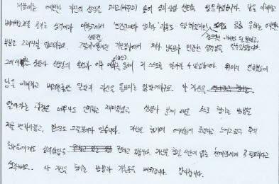
처음에는 예민한 자신의 성격을 고치고(바꾸고) 싶어 심리상담센터를 방문하였습니다. 남을 이해하고 배려하는 것을 즐기는 성격이라 대학교에서 '인간 관계와
심리학' 과목도 수강하였지만 정신적인 이해만 될 뿐이고 종종 욱하는 예민한 부분은 고쳐지질 않더라구요. 그렇게 상담 전 받게 된 기질 검사에서 제가 남들보다
민감한 성격임을 알 수 있었습니다. 그에 대한 상담사 선생님의 설명과 이후 대화를 통해 저 스스로를 알아갈 수 있었습니다. 위에서 언급했듯이 남을 이해하고
배려할 줄만 알았지 자신을 돌보지는 않았더라구요. 나 자신을 알아가는 과정은 너무나도 신기하고 재미있었고 상담사 분께 배운 스스로 챙기는 방법은 저를
변화시켰고 앞으로도 그럴 것이라 믿습니다. 자신을 챙기며 예민함이 줄었다고 느끼고 있고 주위 친구들에게도 심리상담을 권하고 있습니다. 자신을 챙길 시간이 없는
현대인에게 꼭 필요하다고 생각행. 나 자신을 챙기는 방법과 기술들을 배워갑니다. 감사합니다.
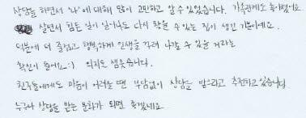
상담을 하면서 '나'에 대해 많이 고민하고 알 수 있었습니다. 가족 관계도 좋아졌어요. 살면서 힘든 일이 일어나도 다시 찾을 수 있는 집이 생긴 기분이에요.
덕분에 즐겁고 행복하게 인생을 꾸려 나갈 수 있을 거라는 확신이 들어요🙂 의지도 샘솟습니다. 친구들에게도 마음이 어려울 땐 부담 없이 상담을 받으라고
추천하고 있습니다. 누구나 상담을 받는 문화가 되면 좋겠습니다.
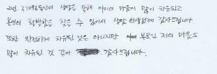
2년 3개월동안의 상담을 통해 아이의 마음이 많이 치유되고 본연의 활발함을 찾을 수 있어서 상담 선생님께 감사드립니다. 또한 완전하게 치유된 것은 아니지만
부모인 저의 마음도 많이 치유된 것 같아 감사드립니다.
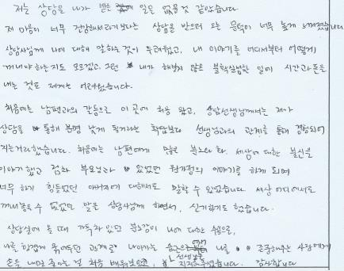
저는 상담을 내가 (직접) 받을 일은 없을 것 같았습니다.
제 마음이 너무 건강해서라기보다는 상담을 받으러 오는 문턱이 너무 높게 느껴졌습니다.
상담사님께서 나에 대해 말하는 것이 두려웠고 내 이야기를 어디부터 어떻게 꺼내야 하는지도 모르겠고, 그런 내가 해보지 않은 불확실한 일에 시간과 돈을 내는
것도 저에게는 어려웠습니다. 처음에는 남편과의 갈등으로 이곳에 처음 왔고, 상담선생님께서는 제가 상담을 통해 분명 낫게 될 거라는 확답보다 선생님과의 관계를
통해 경험되어지는 것이라고 했습니다. 처음에는 남편에게 많은 분노와 화, 세상에 대한 불신을 이야기했고 점차 부모님과 있었던 원가정의 이야기를 하게 되며 너무
하기 힘들었던 아버지에 대해서도 말할 수 있었습니다. 세상 어디에서도 꺼내 놓을 수 없었던 말을 상담사님께 하면서 신기하기도 했습니다.
상담실에 올 때 가득차 있던 분노감이 나에 대한 수용으로, 나를 힘겹게 묶어두던 관계로 나아가는 습관에서 나를 존중해주는 사람에게 손을 내밀 줄 아는 걸 처음
배워보았죠. 선생님은 늘 지지해주셨습니다. 감사합니다.
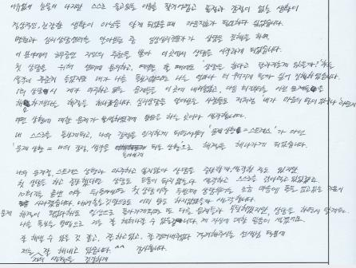
이유 없이 눈물이 나지만 스스로 울고 있는 이유를 찾기 어렵고 표정과 감정이 없는 생활이 정상적인, 건강한 생활이 아님을 알게 되었을 때 마음 치료가 필요하다
싶었습니다.
병원과 상담센터를 알아보던 중 임상심리전문가가 상담을 진행을 하며, 이 분야에서 근무 중인 지인의 추천을 받아 이곳에서 상담을 시작하게 되었습니다. 첫 상담을
위해 센터에 문의하고 예약을 할 때에도 '상담을 한다고 달라지는 게 있을까'하는 생각이 꾸준히 들었지만 내가 나를 돌보지 않으면 나는 얼마나 더 무너지게 될까
싶어 진행하였습니다.
1회 상담 시 제가 마주하고 있는 문제들을 이곳에 내려놓았고, 다음 회기부터는 이런 문제들을 해소하기보다는 해결을 해나갔습니다. 심리 상담을 알아보는 사람들은
저처럼 내가 마음의 병이 있구나라던지 어떤 상황에 대한 문제가 발생하였기에 방문을 하는 곳이라 생각합니다.
나 스스로를 돌보게 되고, 나의 감정을 인지하게 되면서부터 '문제 상황 = 스트레스'가 아닌 '문제 상황 = 나의 감정, 생각을 돌아보게 되는 상황'으로
해결을 해나가게 되었습니다.
나의 문제점, 스트레스 상황과 마주하고 싶지 않아 상담을 중단할까 생각한 적도 있지만 첫 상담을 하고 중단했다면 상담도 도움이 되지 않는다 생각하고 스스로를
갉아먹고 있었겠죠. 10회 기를 끝낸 이후 뒤돌아보면 첫 상담 이후 두 번째 상담부터는 조금 마음에 돌을 얹고 있는 기분이 사라졌습니다. 내려놓은 것 만으로도
이미 반은 하지 않았을까 생각합니다.
문제 해결이 되었다해도 일상으로 돌아가게 되면 또 다른 문제들과 부딪히겠지만 상담을 하면서 알게 된 나를 돌보는
방법으로
저는 잘 헤쳐나갈 수 있을 겁니다. 제 자신에 대한 믿음이 생겼어요. 잘 해낼 수 있는 것 같고, 잘 하고 있고 잘 견뎌내주었다 격려해주시는 선생님 덕분에
저는 저의 생활을 건강하게 잘 해내고 있습니다. 감사합니다.
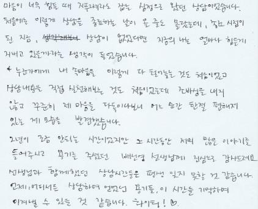
마음이 너무 힘들 때 지푸라기라도 잡는 심정으로 왔던 상담이었습니다. 처음에는 이렇게 상담을 종료하는 날이 올 줄도 몰랐는데 종료 시점이 된 지금, 상담이
없었다면 지금의 나는 얼마나 힘들게 지내고 있을까라는 생각이 들었습니다.
누군가에게 내 속마음을 이렇게 다 털어놓는 것도 처음이었고 상담 내용을 직접 실천해보는 것도 처음이었는데 조바심을 내지 않고 꾸준히 제 마음을 다독이다보니
어느 순간 한결 편해져 있는 제 모습을 발견했습니다.
2년이 조금 안 되는 시간이었지만 그 시간 동안 저의 많은 이야기를 들어주시고 용기를 주셨던 상담사 선생님께 진심으로 감사드려요. 선생님과 함께했던 상담
시간들은 평생 잊지 못할 것 같습니다. 언제 어디서든 상담하며 얻었던 용기들, 이 시간을 기억하며 이겨낼 수 있을 것 같습니다. 화이팅~
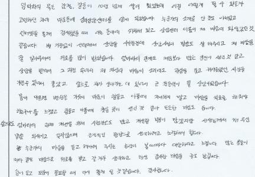
엄마와의 묵은 감정, 갈등이 10년 넘게 쌓여 있었는데 이걸 어떻게 풀 수 있을까 고민하던 차에 마음동네심리상담센터를 알게 되었습니다. 누군가의 소개로 안
것도 아니었고 인터넷을 통해 검색했을 때 아는 동네에 위치해 있고 상담센터 이름이 제 마음에 와 닿았던 것 같습니다.
별 기준 없이 선택해서 상담을 시작한 건데 상담사님이 말씀도 잘 해주시고 제 마음을 잘 알아주셔서 위로를 많이 받았습니다. 엄마와의 관계도 처음보다 많은
진전이 생긴 것 같고 상담을 받으며 그 과정 속에서 제 자신의 마음의 소리에도 관심을 갖고 귀 기울였던 시간을 가질 수 있어서 좋았고, 앞으로 제가 살아가는
데 있어서 큰 원동력이 될 상담이었습니다.
몸이 아프면 병원을 가듯이 마음이 힘들고 아플 때 지나치지 말고 마음을 치료해줘야 하는구나를 느꼈고 힘들고 아플 때 찾을 곳이 생긴 것 같아 든든한 마음도
듭니다. 앞으로도 엄마와의 관계 개선을 위해 시행착오도 많고 개선할 부분이 많겠지만 선생님께서 해주신 말씀 되새기고 잊지 않으며 긍정적인 방향으로 생각하려고
노력하려 합니다. 누군가의 마음을 듣고 헤아려 주시는 능력이 볼 때마다 대단하다고 느낍니다. 많은 분들이 저와 같은 마음으로 위로를 받고 갈 거라 생각하고
항상 감사한 마음을 글로 남깁니다. 힘이 들고 도움이 필요할 때 다시 찾게 될 것 같습니다. 감사합니다.
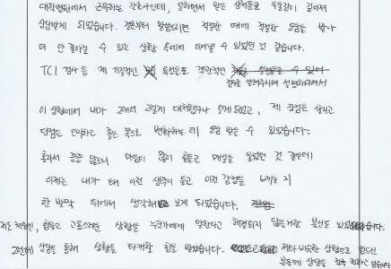
대학병원에서 근무하는 간호사인데, 일하면서 받은 상처들로 우울감이 깊어져 상담받게 되었습니다. 결론부터 말씀드리면 적절한 때에 적절한 도움을 받아 더 안
좋아질 수 있는 상황 속에서 이겨낼 수 있었던 것 같습니다. TCI검사 등 제 기질적인 특성들도 객관적인 점수를 알려주시며 설명해주셔서 이 상황에서 내가
그래서 그렇게 대처했구나 알게 되었고, 제 장점은 살리고 단점은 인지하고 좋은 쪽으로 변화하는데 도움 받을 수 있었습니다.
혼자서 끙끙 앓으니 마음이 많이 힘들고 매일 울었던 것 같은데 이제는 내가 왜 이런 생각이 들고 이런 감정을 느끼는지 한 발짝 뒤에서 생각해보게 되었습니다.
저도 처음엔 힘들고 고통스러운 상황을 누군가에게 말한다고 해결되지 않을 거란 불신도 있었습니다. 그런데 상담을 통해 상황을 타개할 힘을 받았습니다. 저와
비슷한 상황으로 힘드신 분들께 상담을 적극 권하고 싶습니다.♡
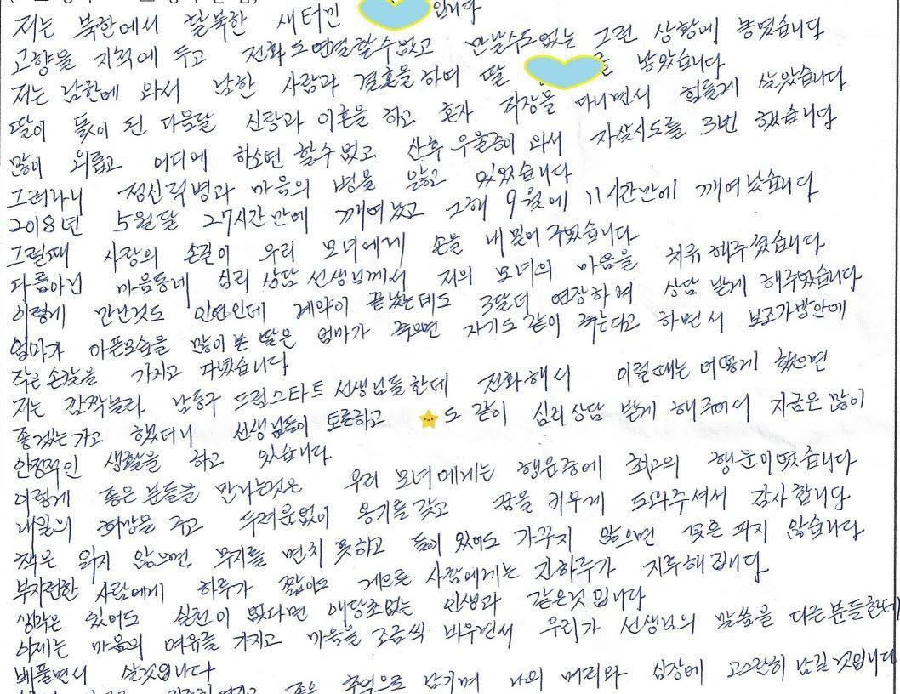
저는 북한에서 탈북한 새터민 입니다.
고향을 지척에 두고 전화도 연결할 수 없고 만날 수도 없는 그런 상황에 놓였습니다. 저는 남한에 와서 남한 사람과 결혼을 하여 딸 OO이를 낳았습니다. 딸이
돌이 된 다음 달 신랑과 이혼을 하고 혼자 직장을 다니면서 힘들게 살았습니다. 많이 외롭고 어디에 하소연 할 수 없고 산후우울증이 와서 자살 시도를 3번
했습니다. 그렇게 정신적 병과 마음의 병을 앓고 있었습니다.
2018년 5월 27시간 만에 깨어났고 그 해 9월에 11시간 만에 깨어났습니다. 그럴 때 사랑의 손길이 우리 모녀에게 손을 내밀어 주었습니다. 다름아닌
마음동네심리상담센터 선생님께서 저의 모녀의 마음을 치유해주셨습니다. 이렇게 만난 것도 인연인데 상담 지원 서비스가 끝났는데도 3달을 더 연장하여 상담 받게
해주셨습니다. 엄마가 아픈 모습을 많이 본 딸은 엄마가 죽으면 자기도 같이 죽는다고 하면서 보조 가방 안에 작은 손 칼을 가지고 다녔습니다.
저는 깜짝 놀라 남동구 드림스타트 선생님들한테 전화해서 이럴 때는 어떻게 했으면 좋겠는가고 했더니 선생님들이 토론하고 딸 OO이도 같이 심리상담 받게 해주어서
지금은 많이 안정적인 생활을 하고 있습니다.
이렇게 좋은 분들을 만나는 것은 우리 모녀에게는 행운 중에 최고의 행운이었습니다. 내일의 희망을 주고 두려움 없이 용기를 갖고 꿈을 키우게 도와주셔서
감사합니다. 책은 읽지 않으면 무지를 면치 못하고 들이 있어도 가꾸지 않으면 꽂은 피지 않습니다. 부지런한 사람에게 하루가 짧아도 게으른 사람에게는 긴 하루가
지루해집니다. 생각은 있어도 실천이 없다면 애당초 없는 인생과 같은 것입니다. 이제는 마음의 여유를 가지고 마음을 조금씩 비우면서 선생님의 말씀을 다른
분들한테 베풀면서 살 것입니다.
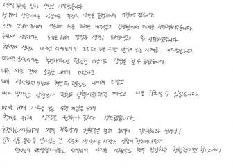
지인의 추천을 받아 상담을 시작했습니다.
첫 번째 상담 시에는 낯설기도 했고 감정과 생각을 표현하는 게 어렵기도 했습니다. 친절히 상담해주시며 단순하고 쉬운 과제를 내주셨고 실생활에서 과제를
시행해보았습니다.
두 번째 상담 시에는 울기도 하며 감정과 생각을 표현하였고 속이 시원하였습니다. 첫 번째 상담시 내주신 과제보다는 조금 더 나를 위한 난이도 있는 과제를
내주셨습니다. 마지막 상담 시에는 후련하기 보단 편안한 마음으로 상담을 할 수 있었습니다.
나를 아는 것에 소홀할 나에게 미안하고 내가 생각했던 것보다 훨씬 더 괜찮은 나에게 고맙고 내가 생각한 상황보다 괜찮은 상황이였던 걸 깨닫고 나를 위로할 수
있었습니다.
미래를 위해 사주를 보는 주변 지인을 보며 현재를 위해 상담을 권해야 하겠다 생각했습니다. 친절하고 따뜻하게 저의 자존감과 행복감을
높여 주셔서
감사합니다. 선생님!
(ps. 식물, 동물 등 살아있는 걸 소중하게 생각하는 사람은 심성이 착하다던데, 선생님의 내담자분들도, 선생님이 아끼는 식물들도 모두 건강하고 행복했으면
합니다.)
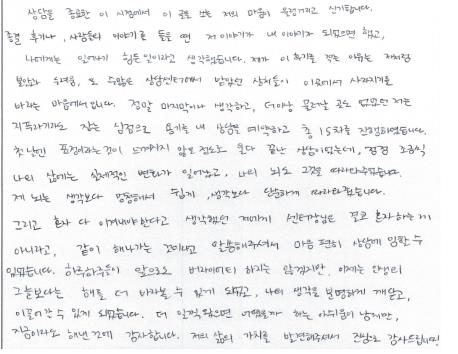
상담을 종료한 이 시점에서 이 글을 쓰는 저의 마음이 울렁거리고 신기합니다. 종결 후기나 사람들의 이야기를 들을 땐 저 이야기가 내 이야기가 되었으면 했고,
나에게는 일어나기 힘든 일이라고 생각했습니다. 제가 이 후기를 적는 이유는 저처럼 불안과 두려움, 또 수 많은 상담 센터에서 받았던 상처들이 이곳에서
사라지기를 바라는 마음에서입니다.
정말 마지막이라 생각하고, 더 이상 물러날 곳도 없었던 저는 지푸라기라도 잡는 심정으로 용기를 내 상담을 예약하고 총 15차를 진행하였습니다.
첫 날엔 표정이라는 것이 느껴지지 않을 정도로 울다 끝난 상담이었는데 점점 조금씩 나의 삶에는 실제적인 변화가 일어났고 나의 뇌도 그것을 따라와주었습니다. 제
뇌는 생각보다 멍청해서 쉽게 생각보다 단순하게 따라와줬습니다. 그리고 혼자 다 이겨내야 한다고 생각했던 저에게 센터장 님은 결코 혼자 하는 게 아니라고 같이
해나가는 것이라고 말씀해주셔서 마음 편히 상담에 임할 수 있었습니다.
하루하루가 앞으로도 버라이어티 하지는 않겠지만 이제는 인생의 그늘보다는 해를 더 바라볼 수 있게 되었고 나의 생각을 분명하게 깨닫고 이끌어갈 수 있게
되었습니다. 더 일찍 왔으면 어땠을까 하는 아쉬움이 남지만 지금이라도 해낸 것에 감사합니다. 저의 삶의 가치를 발견해주셔서 진심으로
감사드립니다.
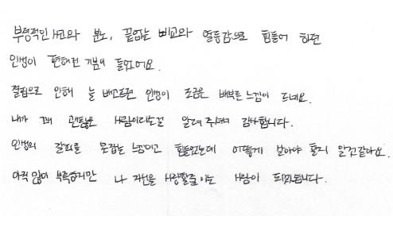
부정적인 사고와 분노, 끝없는 비교와 열등감으로 힘들어 하던 인생이 편해진 기분이 들었어요. 결핍으로 인해 늘 배고프던 인생이 조금은 배부른 느낌이 드네요.
내가 꽤 괜찮은 사람이라는 걸 알려주셔서 감사합니다. 인생의 갈피를 못잡는 느낌이고 힘들었는데 어떻게 살아야 할지 알 것 같아요. 아직 많이 부족하지만 나
자신을 사랑할 줄 아는 사람이 되었습니다.
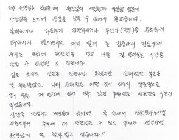
처음 원장님을 뵈었을 때 원장님의 세심함과 차분함과 덕분에 안정감을 느끼며 상담을 받을 수 있어서 좋았습니다. 불편하거나 과도하게 질문하시거나 무언가
(정보)를 무리하게 요구하시지 않으면서도 저의 말에 늘 집중해서 관심 가져 주시는 모습에 원장님을 믿고 나를 잘 돌아보는 시간을 갖을 수 있었던 것
같습니다.
많은 회기의 상담을 진행하진 못했지만 상처였던 부분은 잘 위로 받았고, 나의 문제점은 어떤 것이 있는지 객관적으로 알게 되는 제 인생에 있어 아주 값진 후회
없는 선물 같은 시간이 되었습니다. 상담을 망설이고 계신 분이 있다면 꼭 힘내서 상담 받아 보시기를 응원드리며 추후에 더 상담 받을 수 있는 기회가 생긴다면
원장님께 또 찾아뵙고 싶습니다!
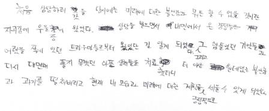
처음 상담하러 갔을 당시에는 미래에 대한 불안감과 뭐든 할 수 없을 것이란 자괴감에 우울증이 왔었다. 상담을 받으면서 내면에서 온 감정들은 어렸을 적에 있던
트라우마들로부터 왔었단 걸 알게 되었다. 그리고 그 힘들었던 기억들과 다시 대면해 풀지 못했던 아픈 상처들을 치료했더니 더 이상 쓸데없는 불안함과 과거를
떨쳐버리고 현재 내 모습과 미래에 대한 계획을 긍정적으로 세울 수 있게 되었다.
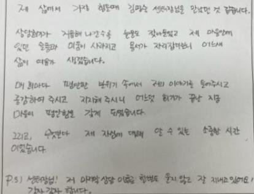
제 삶에서 가장 힘들 때 김명숙 센터장 님을 만났던 것 같습니다. 상담 회기가 거듭해나갈 수록 눈물도 잦아들었고 제 마음 안에 있던 슬픔과 미움이 사라지고
용서가 자리잡다보니 어느새 삶이 여유가 생겼습니다.
매 회마다 편안한 분위기 속에서 저의 이야기를 들어주시고 공감하여 주시고 지지해 주시니 어느덧 회기가 끝난 지금 마음이 평안함을 갖게 되었습니다.
그리고, 무엇보다 제 자신에 대해 알 수 있는 소중한 시간이었습니다.
p.s) 센터장님! 저 마지막 상담 이후로 한번도 울지 않고 잘 지내고 있어요. 감사 감사합니다.
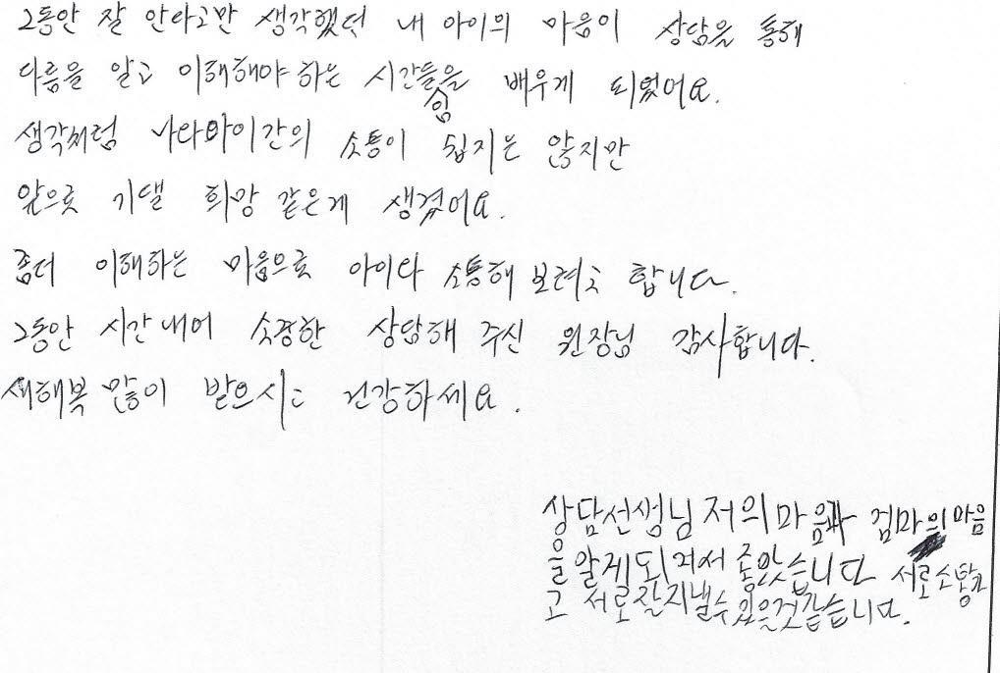
그동안 잘 안다고 생각했던 내 아이의 마음이 상담을 통해 다름을 알고 이해해야하는 시간들임을 배우게 되었어요. 생각처럼 나와 아이 간의 소통이 쉽지는 않지만
앞으로 기댈 희망 같은 게 생겼어요. 좀 더 이해하는 마음으로 아이와 소통해 보려고 합니다. 그동안 시간 내어 소중한 상담해주신 원장님 감사합니다.
새해 복 많이 받으시고 건강하세요. 상담 선생님, 저의 마음과 엄마의 마음을 알게 되어서 좋았습니다. 서로 소통하고 서로 잘 지낼 수 있을 것
같습니다.♡
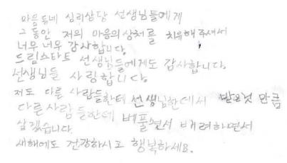
(아동상담후기)
마음동네심리상담 선생님들에게, 그동안 저의 마음의 상처를 치유해주셔서 너무 너무 감사합니다. 드림스타트 선생님들에게도 감사합니다. 선생님들 사랑합니다. 저도
다른 사람들한테 선생님한테서 받은 것만큼 다른 사람들한테 베풀면서 배려하면서 살겠습니다. 새해에도 건강하시고 행복하세요.
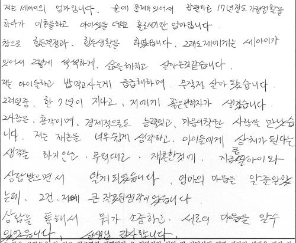
저는 세 아이의 엄마입니다. 술에 문제가 있어서 남편하고 17년 정도 가정 생활을 하다가 이혼을 하고 아이 셋을 데리고 홀로서기 한 엄마입니다.
참으로 힘든 결정과 힘든 생활을 하였습니다. 그래도 저에게는 세 아이가 있어서 그렇게 씩씩하게 삶을 헤치고 살아온 것 같습니다.
저는 아이들하고 밥 먹고 사는 게 급급해하며 무작정 살아왔습니다. 그러던 중, 한 7년이 지나고 저에게 좋은 반려자가 생겼습니다.
그 사람은 총각이며 경제적으로도 능력 있고 마음이 착한 사람을 만났습니다. 저는 재혼을 너무 쉽게 생각하고 아이들에게 상처가 된다는 생각을 하지 않고 무턱대고
재혼한 것에 지금 큰 딸아이와 상담받으면서 알게 되었습니다. 엄마의 마음을 알 줄 알았는데 그건 저의 큰 잘못된 생각이었습니다. 상담을 통해서 뭐가 소중하고
서로의 마음을 알 수 있었습니다. 선생님 감사합니다.
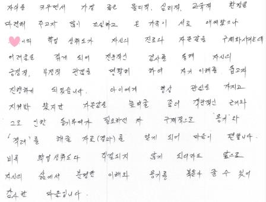
(지능검사후기)
자식을 키우면서 가장 좋은 물리적, 심리적, 교육적 환경을 마련해 주고자 많이 조심하고 온 가족이 서로 애써왔으나 OO이의 학업 성취도가 자신의 진로와
자존감을 구체화시키는데 어려움을 겪게 되어 전문적인 검사를 통해 자신의 긍정적, 부정적 관점을 명확히 하여 자기 이해를 돕고자 진행하게
되었습니다.
아이에게 항상 관심을 가지고 지켜봐 왔지만 자존감을 높여줄 좀 더 객관적인 근거와 그로 인한 동기부여가 필요하던 차 구체적으로 '용기'와 '격려'를 해줄
자료(결과)를 얻게 되어 마음이 편합니다. 비록 학업 성취도와 직결되지 않게 되더라도 앞으로 자신의 삶에서 분명한 이해와 용기를 북돋아 줄 수 있어 감사한
마음입니다.
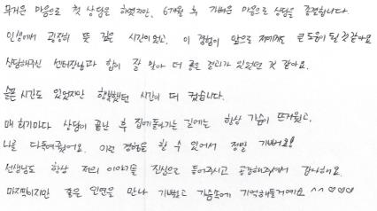
무거운 마음으로 첫 상담을 하였지만 6개월 후 가벼운 마음으로 상담을 종결합니다. 인생에서 굉장히 뜻 깊은 시간이었고 이 경험이 앞으로 저에게도 큰 도움이 될
것 같아요.
상담해주신 센터장 님과 합이 잘 맞아 더 좋은 결과가 있었던 것 같아요. 슬픈 시간도 있었지만 행복했던 시간이 더 컸습니다.
매 회기마다 상담이 끝난 후 집에 돌아가는 길에는 항상 가슴이 뜨거웠고 나를 다독여줬어요. 이런 경험을 할 수 있어서 정말 기뻐요. 선생님도 항상 저의
이야기를 진심으로 들어주시고 공감해주셔서 감사해요. 마지막이지만 좋은 인연을 만나 기뻤고 가슴속에 기억해둘거에요. ^^
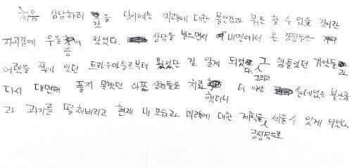
처음 상담하러 갔을 당시에는 미래에 대한 불안감과 뭐든 할 수 없을 것이란 자괴감에 우울증이 왔었다. 상담을 받으면서 내면에서 온 감정들은 어렸을 적에 있던
트라우마들로부터 왔었던 걸 알게 되었다. 그리고 그 힘들었던 기억들과 다시 대면해 풀지 못했던 아픈 상처들을 치료했더니 더 이상 쓸데없는 불안함과 과거를
떨쳐버리고 현재 내 모습과 미래에 대한 계획을 긍정적으로 세울 수 있게 되었다.
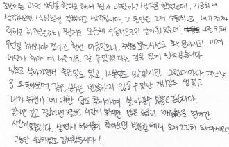
초반에는 과연 상담을 한다고 해서 뭔가 바뀔까 생각을 했었는데, 지금 와서 생각해보면 상담받길 잘했다고 생각합니다. 그 동안은 그저 수동적으로 내가 진짜
원하고 하고 싶은 것이 뭔지도 모른채 수동적으로만 살아왔었는데 나를 위해 무언갈 해봐야겠다고 한번 마음먹으니, 주변을 보는 시선도 확 달라지고 이제 어떻게
해야 더 나은 길을 갈 수 있겠다는 길을 찾게 된 것 같습니다.
앞으로 살아가면서 좋은 일도 있고 나쁜 일도 있겠지만 그럴 때마다 지난 날을 되돌아보며 같은 실수는 반복하지 않을 수 있단 자신감도 생겼고 "내가 누구인가"에
대한 답도 찾아가며 살아갈 수 있을 것 같습니다. 길다면 길고 짧다면 짧은 시간이었지만 많은 도움과 깨달음을 얻어간 시간이었습니다. 살면서 어려움이 찾아오면
방문할테니 오래 건강히 있어주세요. 그동안 수고하셨고 감사했습니다!
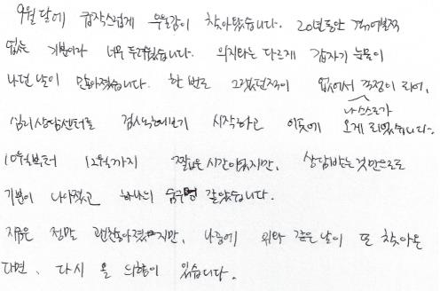
9월 달에 급작스럽게 우울감이 찾아왔습니다. 20년 동안 겪어 본 적 없는 기분이라 너무 두려웠습니다. 의지와는 다르게 갑자기 눈물이 나던 날이 많아졌습니다.
한 번도 그랬던 적이 없어서 나 스스로가 걱정이 되어 심리상담센터를 검색해보기 시작하고 이곳에 오게 되었습니다.
10월부터 12월까지 짧은 시간이었지만 상담 받는 것만으로도 기분이 나아졌고 하나의 숨구멍 같았습니다. 지금은 정말 괜찮아졌지만 나중에 위와 같은 날이 또
찾아온다면 다시 올 의향이 있습니다.
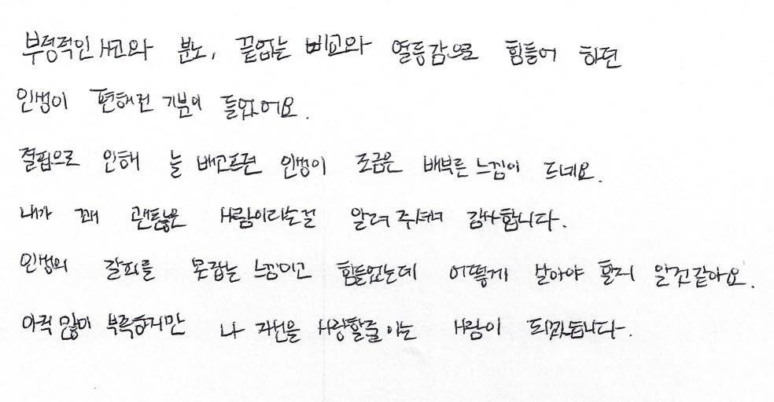
부정적인 사고와 분노, 끝없는 비교와 열등감으로 힘들어 하던 인생이 편해진 기분이 들었어요. 결핍으로 인해 늘 배고프던 인생이 조금은 배부른 느낌이 드네요.
내가 꽤 괜찮은 사람이라는 걸 알려주셔서 감사합니다. 인생의 갈피를 못 잡는 느낌이고 힘들었는데 어떻게 살아야 할지 알 것 같아요. 아직 많이 부족하지만 나
자신을 사랑할 줄 아는 사람이 되겠습니다.♡
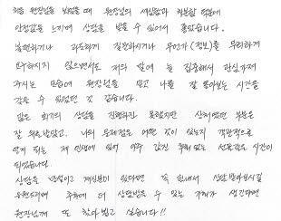
처음 원장님을 뵈었을 때 원장님의 세심함과 차분함 덕분에 안정감을 느끼며 상담을 받을 수 있어서 좋았습니다.
불편하거나 과도하게 질문하시거나 무언가 (정보)를 무리하게 요구하시지 않으면서도 저의 말에 늘 집중해서 관심 가져 주시는 모습에 원장님을 믿고 나를 잘
돌아보는 시간을 갖을 수 있었던 것 같습니다.
많은 회기의 상담을 진행하진 못했지만 상처였던 부분은 잘 위로 받았고, 나의 문제점은 어떤 것이 있는지 객관적으로 알게 되는 제 인생에 있어 아주 값진 후회
없는 선물 같은 시간이 되었습니다.
상담을 망설이고 계신 분이 있다면 꼭 힘내서 상담 받아보시기를 응원 드리며 추후에 더 상담 받을 수 있는 기회가 생긴다면 원장님께 또 찾아뵙고
싶습니다!
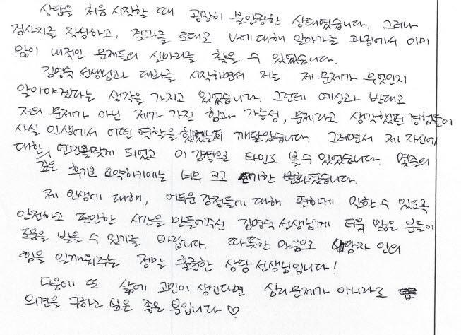
상담을 처음에 시작할 때 굉장히 불안정한 상태였습니다. 그러나 검사지를 작성하고 결과를 토대로 나에 대해 알아가는 과정에서 이미 많이 내적인 문제들의 실마리를
찾을 수 있었습니다.
김명숙 선생님과 대화를 시작하면서 저는 제 문제가 무엇인지 알아야겠다는 생각을 가지고 있었습니다.
그런데 예상과 반대로 저의 문제가 아닌 제가 가진 힘과 가능성, 문제라고 생각했던 경험들이 사실 인생에서 어떤 역할을 했었는지 깨달았습니다.
그러면서 제
자신에 대한 깊은 연민을 갖게 되었고 이 감정으로 타인도 볼 수 있었습니다. 몇 줄의 후기로 요약하기에는 너무 크고 신기한 변화였습니다.
제 인생에 대해, 어두운 감정들에 대해 편하게 말할 수 있도록 안전하고 편안한 시간을 만들어주신 김명숙 선생님께 더욱 많은 분들이 도움을 받을 수 있기를
바랍니다. 따뜻한 마음으로 내담자 안의 힘을 일깨워주는 정말 훌륭한 상담 선생님입니다!
다음에 또 삶에 고민이 생긴다면 심리 문제가 아니라도 의견을 구하고 싶은 좋은 분입니다.
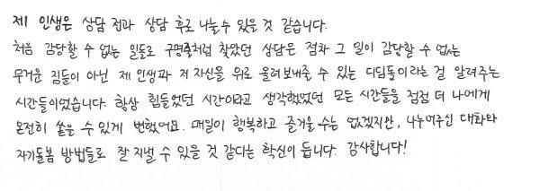
제 인생은 상담 전과 상담 후로 나눌 수 있을 거 같습니다.
처음 감당할 수 없는 일들로 구명줄처럼 찾았던 상담은 점차 그 일이 감당할 수 없는무거운 짐들이 아닌 제 인생과 저 자신을 위로 올려보내줄 수 있는
디딤돌이라는 걸 알려주는 시간들이었습니다. 항상 힘들었던 시간이라고 생각했었던 모든 시간들을 점점 더 나에게 온전히 쏟을 수 있게 변했습니다. 매일이 행복하고
즐거울 수는 없겠지만, 나누어주신 대화와 자기 돌봄 방법들로 잘 지낼 수 있을 것 같다는 확신이 듭니다. 감사합니다!
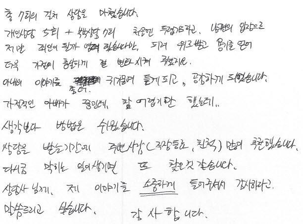
총 7회에 걸쳐 상담을 마쳤습니다. 개인상담 5회 + 부부상담 7회.
처음엔 두렵기도 하고, 남편의 입장으로 저만 죄인이 될까 염려했습니다만, 되려 위로 받고 용기를 얻어 더욱 가정에 충실하게 절 변화시켜 주셨지요. 아내의
이야기를 좀 더 귀 기울여 듣게 되고, 공감하게 되었습니다.
가정적인 아빠가 꿈인데, 참 어렵기만 했는데.... 생각보다 방법은 쉬웠습니다. 상담을 받는 기간에 주변 사람(직장 동료, 친척)에 많이 추천했습니다. 다시금
막히는 일이 생기면 또 찾을 것 같습니다. 상담사 님께, 저의 이야기를 소중하게 들어주셔서 감사하다고 말씀드리고 싶습니다.
감사합니다!
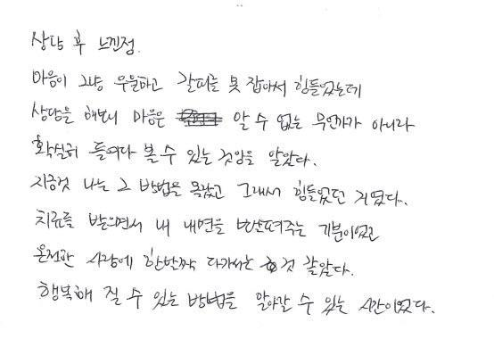
상담 후 느낀 점.
마음이 그냥 우울하고 갈피를 못 잡아서 힘들었는데 상담을 해보니 마음은 알 수 없는 무언가가 아니라 확실히 들여다 볼 수 있는 것임을 알았다. 지금껏 나는 그
방법을 몰랐고 그래서 힘들었던 거였다.
치료를 받으면서 내 내면을 보살펴주는 기분이었고 온전한 사랑에 한발짝 다가서는 것 같았다. 행복해질 수 있는 방법을 알아갈 수 있는 시간이었다.
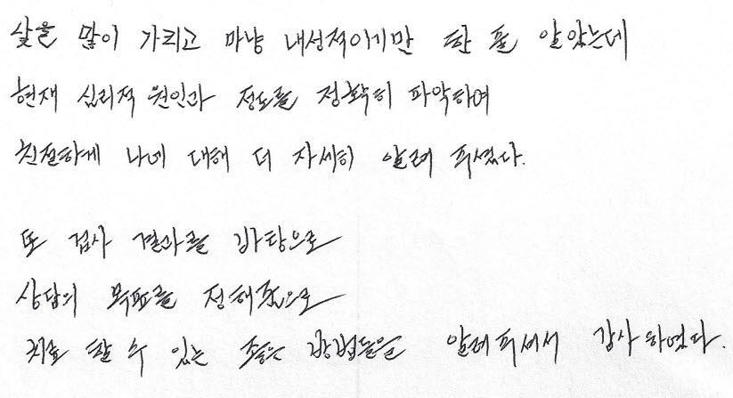
낯을 많이 가리고 마냥 내성적이기만 한 줄 알았는데 현재 심리적 원인과 정도를 정확하게 파악하여 친절하게 나에 대해 더 자세히 알려 주셨다. 또 검사 결과를
바탕으로 상담의 목표를 정해줌으로 치료 할 수 있는 좋은 방법들을 알려주셔서 감사하였다.
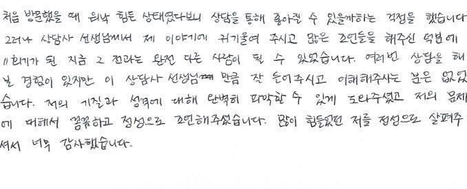
처음 방문했을 때 워낙 힘든 상태였다보니 상담을 통해 좋아질 수 있을까하는 걱정을 했습니다. 그러나 상담사 선생님께서 제 이야기에 귀 기울여 주시고 많은
조언들을 해주신 덕분에 11회기가 된 지금 그 전과는 완전히 다른 사람이 될 수 있었습니다.
여러 번 상담을 해본 경험이 있지만 이 상담사 선생님만큼 잘 들어주시고 이해해주시는 분은 없었습니다. 저의 기질과 성격에 대해 완벽하게 파악할 수 있게
도와주셨고 저의 문제에 대해서 꼼꼼하게 정성으로 조언해주셨습니다. 많이 힘들었던 저를 정성으로 살펴주셔서 너무 감사했습니다.
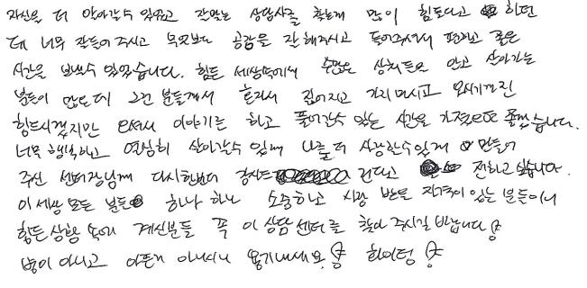
자신을 더 알아갈 수 있었고 잘맞는 상담사를 찾는 것이 많이 힘들다고 하던데 너무 잘 들어주시고 무엇보다 공감을 잘해주시고 들어주셔서 편하고 좋은 시간을 보낼
수 있었습니다. 힘든 세상속에서 수많은 상처들을 안고 살아가는 분들이 많은데 그런 분들께서 혼자서 짊어지고 가지 마시고 오시기까진 힘드시겠지만 오셔서 이야기를
하고 풀어갈 수 있는 시간을 가졌으면 좋겠습니다. 너무 행복하고 열심히 살아갈 수 있어 나를 더 사랑할 수 있게 만들어 주신 센터장 님께 다시 한번 더
감사드린다고 전하고 싶습니다. 이 세상 모든 분들 하나 하나 소중하고 사랑 받을 자격이 있는 분들이니 힘든 상황 속에 계신 분들 꼭 이 상담 센터를
찾아주시기를 바랍니다! 병이 아니고 아픈 거 아니니 용기내세요! 화이팅!
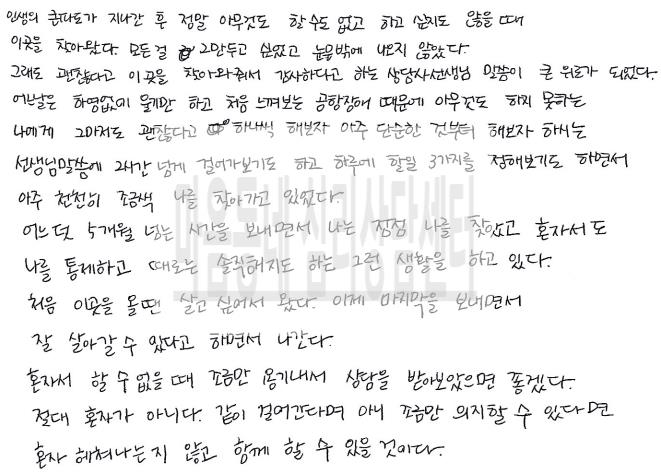
인생의 큰 파도가 지나간 후 정말 아무 것도 할 수도 없었고 하고 싶지도 않을 때 이곳을 찾아왔다. 모든 것을 그만두고 싶었고 눈물밖에 나오지 않았다. 그래도
괜찮다고 이곳을 찾아와줘서 감사하다고 하는 상담사 선생님 말씀이 큰 위로가 되었다.
어느 날은 하염없이 울기만 하고 처음 느껴보는 공황장애 때문에 아무 것도 하지 못하는 나에게 그마저도 괜찮다고 하나씩 해보자 아주 단순한 것부터 해보자 하시는
선생님 말씀에 2시간 넘게 걸어가보기도 하고 하루에 할 일 3가지를 정해보기도 하면서 아주 천천히 조금씩 나를 찾아가고 있었다.
어느 덧 5개월 넘는 시간을 보내면서 나는 점점 나를 찾았고 혼자서도 나를 통제하고 때로는 솔직해지기도 하는 그런 생활을 하고 있다. 처음 이곳에 올 땐 살고
싶어서 왔다. 이제 마지막을 보내면서 잘 살아갈 수 있다고 하면서 나간다. 혼자서 할 수 없을 때 조금만 용기내서 상담을 받아보았으면 좋겠다. 절대 혼자가
아니다. 같이 걸어간다면 아니 조금만 의지할 수 있다면 혼자 헤쳐나가지 않고 함께 할 수 있을 것이다.♡
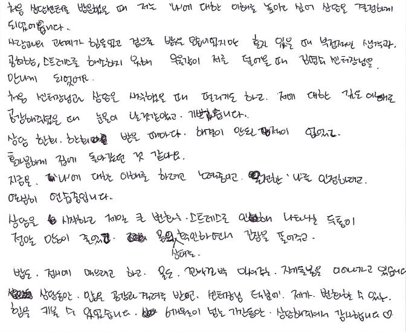
처음 상담센터를 방문했을 때 저는 '나'에 대한 이해를 높이고 싶어 상담을 결정하게 되었습니다.
사람과의 관계가 힘들었고 겉으로 밝은 모습이었지만 혼자 있을 때 부정적인 생각과 공허함, 스트레스를 해소하지 못해 우울감이 저를 덮을 때 김명숙 센터장 님을
만나게 되었습니다.
처음 센터장 님과 상담을 시작했을 때 떨리기도 하고 저에 대한 깊은 이해로 공감해졌을 때 눈물이 날 것 같았고 기뻤습니다. 상담 한 회 한 회 받을 때마다
해결이 안 된 적이 없었고 홀가분하게 집에 돌아갔던 거 같습니다.
지금은 '나'에 대한 이해를 하려고 노력 중이고 온전한 '나'를 인정하려고 열심히 연습 중입니다. 상담을 시작하고 나타난 제일 큰 변화는 스트레스로 인해
나타나는 두통이 정말 많이 줄었고 몸 상태를 확인하면서 긴장을 풀어주고 밥도 정시에 먹으려고 하고 물도 꼬박꼬박 마셔주는 자기 돌봄을 이어나가고 있습니다.
상담하는 동안 많은 공감과 격려를 받았고 센터장 님 덕분에 제가 변화할 수 있는 힘을 키울 수 있었습니다. 6개월이 넘는 기간 동안 상담해주셔서
감사합니다.
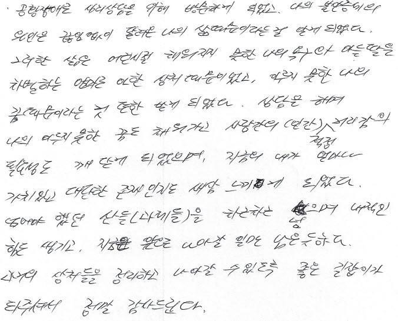
공황장애로 심리상담을 위해 방문하게 되었고, 나의 불안 증세의 원인은 끊임없이 달려온 나의 삶 때문이라는 것을 알게 되었다. 그러한 삶은 어린 시절 채워지지
못한 나의 욕구와 아들 딸을 차별하는 엄마로 인한 상처 때문이었고, 이루지 못한 나의 꿈 때문이라는 것 또한 알게 되었다.
상담을 하며 나의 이루지 못한 꿈도 채워가고 사람 간의 적정 거리감의 필요성도 깨닫게 되었으며, 지금의 내가 얼마나 가치 있고 대단한 존재인지도 새삼 느끼게
되었다. 넘어야 했던 산들(과제들)을 차근차근 넘으며 내적인 힘도 생기고, 지금 앞으로 나아갈 일만 남은듯하다. 과거의 상처들을 정리하고 나아갈 수 있도록
좋은 길잡이가 되어주셔서 정말 감사드린다.
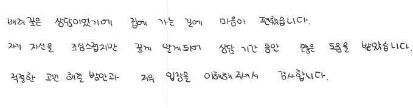
배려 깊은 상담이었기에 집에 가는 길에 마음이 편했습니다. 자기 자신을 조심스럽지만 깊게 알게 되어 상담 기간 동안 많은 도움을 받았습니다. 적절한 고민 해결
방안과 저의 입장을 이해해주셔서 감사합니다.
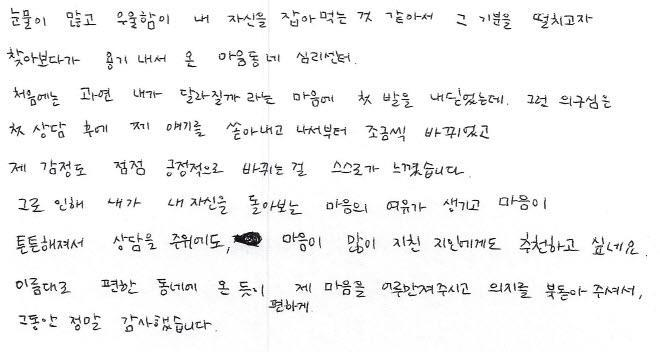
눈물이 많고 우울함이 내 자신을 잡어 먹는 것 같아서 그 기분을 떨치고자 찾아보다가 용기 내서 온 마음동네심리상담센터. 처음에는 과연 내가 달라질까라는 마음에
첫 발을 내딛었는데 그런 의구심은 첫 상담 후에 제 얘기를 쏟아내고 나서부터 조금씩 바뀌었고 제 감정도 점점 긍정적으로 바뀌는 걸 스스로가 느꼈습니다.
그로 인해 내가 내 자신을 돌아보는 마음의 여유가 생기고 마음이 튼튼해져서 상담을 주위의 마음이 많이 지친 지인에게도 추천하고 싶네요. 이름대로 편안한 동네에
온 듯이 편하게 제 마음을 어루만져 주시고 의지를 북돋아 주셔서 그동안 정말 감사했습니다.
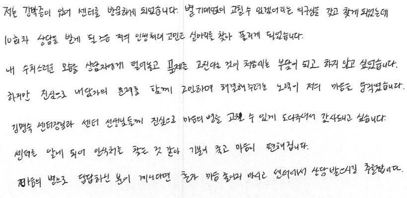
저는 강박증이 있어 센터를 방문하게 되었습니다. 별 기대 없이 고칠 수나 있겠어라는 의구심을 가지고 찾게 되었는데 10회 차 상담을 받게 될 즈음 저의 인생
최대 고민의 실마리를 찾아 풀리게 되었습니다.
내 수치스러운 모습을 상담자에게 털어놓고 문제를 고친다는 것이 처음에는 부담이 되고 하지 않고 싶었습니다. 하지만 진심으로 내담자의 문제를 함께 고민하며
해결해주려는 노력이 저의 마음을 움직였습니다. 김명숙 센터장님과 센터 선생님들께 진심으로 마음의 병을 고칠 수 있게 도와주셔서 감사하고 싶습니다. 센터를 알게
되어 안식처를 찾은 것 같아 기분이 좋고 마음이 편해집니다. 마음의 병으로 답답하신 분이 계시다면 혼자 마음 졸이지 마시고 센터에서 상담 받으시기를
추천합니다.!
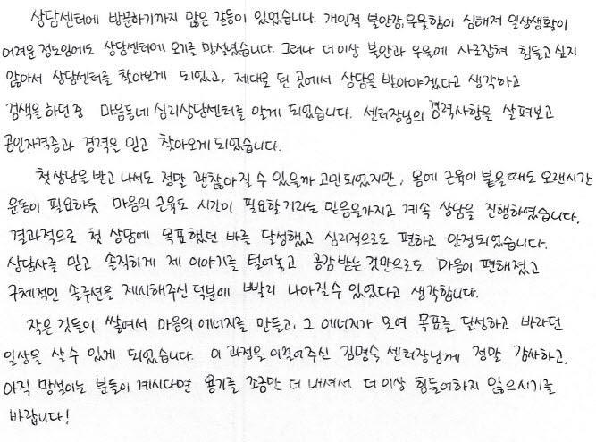
마음동네상담센터에 방문하기까지 많은 갈등이 있었습니다. 개인적 불안감, 우울함이 심해져 일상 생활이 어려운 정도 임에도 상담센터에 오기를 망설였습니다. 그러나
더 이상 불안과 우울에 사로잡혀 힘들고 싶지 않아서 상담센터를 찾아보게 되었고, 제대로 된 곳에서 상담을 받아야 하겠다고 생각하고 검색을 하던 중
마음동네심리상담센터를 알게 되었습니다. 센터장 님의 경력 사항을 살펴보고 공인자격증과 경력을 믿고 찾아오게 되었습니다.
첫 상담을 받고 나서도 정말 괜찮아질 수 있을까 고민되었지만, 몸에 근육이 붙을 때도 오랜 시간 운동이 필요하듯 마음의 근육도 시간이 필요할 거라는 믿음을
가지고 계속 상담을 진행하였습니다. 결과적으로 첫 상담에 목표했던 바를 달성했고 심리적으로도 편안하고 안정되었습니다. 상담사를 믿고 솔직하게 제 이야기를
털어놓고 공감받는 것만으로도 마음이 편해졌고 구체적인 솔루션을 제시해주신 덕분에 빨리 나아질 수 있었다고 생각합니다.
작은 것들이 쌓여서 마음의 에너지를 만들고, 그 에너지가 모여 목표를 달성하고 바라던 일상을 살 수 있게 되었습니다. 이 과정을 이끌어주신 김명숙 센터장님께
정말 감사하고 아직 망설이는 분들이 계신다면 용기를 조금만 더 내셔서 더 이상 힘들어하지 않으시기를 바랍니다!
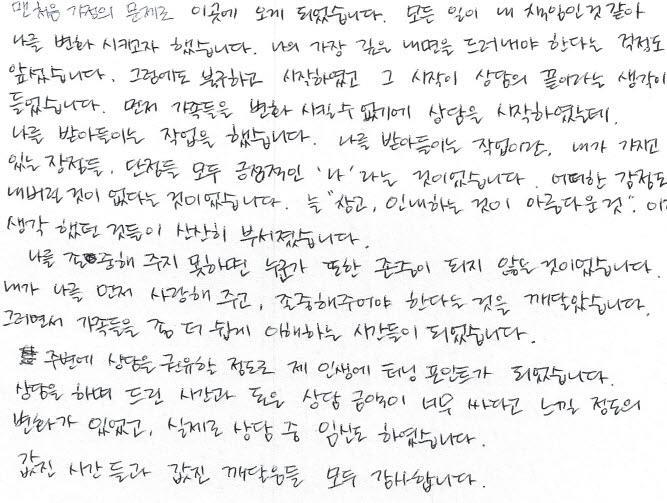
맨 처음 가정의 문제로 이곳에 오게 되었습니다. 모든 일이 내 책임인 것 같아 나를 변화시키고자 했습니다. 나의 가장 깊은 내면을 드러내야 한다는 걱정도
앞섰습니다. 그럼에도 불구하고 시작하였고 그 시작이 상담의 끝이라는 생각이 들었습니다. 먼저 가족들을 변화 시킬 수 없기에 상담을 시작하였는데 나를 받아들이는
작업을 했습니다. 나를 받아들이는 작업이란 내가 가지고 있는 장점들, 단점들 모두 긍정적인 '나'라는 것이었습니다. 어떠한 감정도 내버릴 것이 없다는
것이었습니다. 늘 "참고, 인내하는 것이 아름다운 것"으로 생각했던 것들이 산산이 부서졌습니다.
나를 존중해주지 못하면 누군가 또한 존중이 되지 않는 것이었습니다. 내가 나를 먼저 사랑해주고, 존중해주어야 한다는 것을 깨달았습니다. 그러면서 가족들을 좀
더 쉽게 이해하는 시간들이 되었습니다. 주변에 상담을 권유할 정도로 제 인생에 터닝 포인트가 되었습니다. 상담을 하며 들인 시간과 돈은 상담 금액에 비해 너무
싸다고 느낄 정도의 변화가 있었고, 실제로 상담 중 임신도 하였습니다. 값진 시간들과 값진 깨달음들 모두 감사합니다.
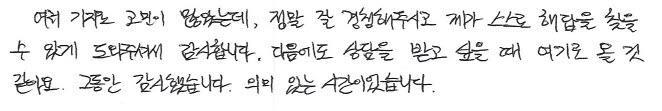
여러 가지로 고민이 많았는데 정말 잘 경청해주시고 제가 스스로 해답을 찾을 수 있게 도와주셔서 감사합니다. 다음에도 상담을 받고 싶을 때 여기로 올 것
같아요. 그동안 감사했습니다. 의미 있는 시간이었습니다.♡
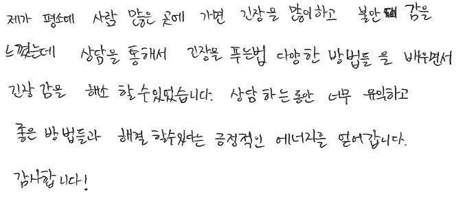
제가 평소에 사람 많은 곳에 가면 긴장을 많이 하고 불안감을 느꼈는데 상담을 통해서 긴장을 푸는 다양한 방법들을 배우면서 긴장감을 해소할 수 있었습니다.
상담하는 동안 너무 유익하고 좋은 방법들과 해결할 수 있다는 긍정적인 에너지를 얻어갑니다. 감사합니다!
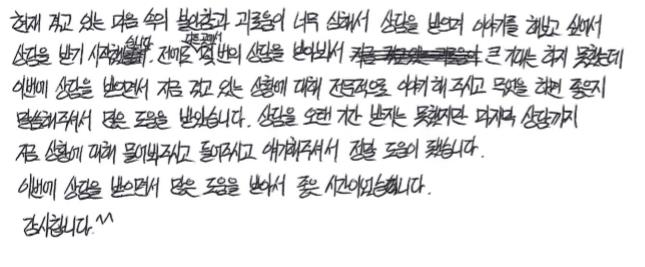
현재 겪고 있는 마음 속의 불안함과 괴로움이 너무 심해서 상담을 받으며 이야기를 해보고 싶어서 상담을 받기 9시작했습니다. 전에도 다른 곳에서 몇 번의 상담을
받아봐서 큰 기대는 하지 못했는데 이번에 상담을 받으면서 지금 겪고 있는 상황에 대해 전문적으로 이야기 해주시고 무엇을 하면 좋을지 말씀해주셔서 많은 도움을
받았습니다. 상담을 오랜 기간 받지는 못했지만 마지막 상담까지 지금 상황에 대해 물어봐주시고 들어주시고 얘기해주셔서 정말 도움이 됐습니다. 이번에 상담을
받으면서 많은 도움을 받아서 좋은 시간이었습니다. 감사합니다. ^^
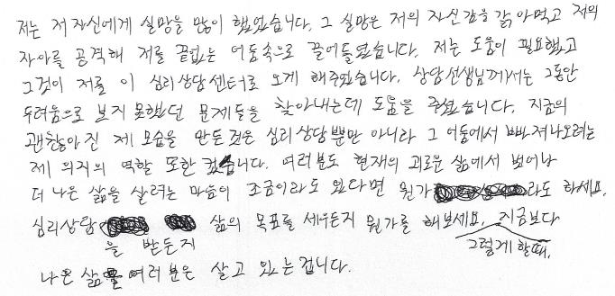
저는 저 자신에게 실망을 많이 했었습니다. 그 실망은 저의 자신감을 갉아먹고 저의 자아를 공격해 저를 끝없는 어둠 속으로 끌어들였습니다. 저는 도움이 필요했고
그것이 저를 이 심리상담센터로 오게 해주었습니다.
상담 선생님께서는 그동안 두려움으로 보지 못했던 문제들을 찾아내는데 도움을 주셨습니다. 지금의 괜찮아진 제 모습을 만든 것은 심리상담뿐만 아니라 그 어둠에서
빠져나오려는 제 의지의 역할 또한 컸습니다. 여러분도 현재의 괴로운 삶에서 벗어나 더 나은 삶을 살려는 마음이 조금이라도 있다면 뭔가라도 하세요.
심리상담을 받든지 삶의 목표를 세우든지 뭔가를 해보세요. 그렇게 할 때 지금보다 나은 삶을 여러분은 살고 있을 겁니다.
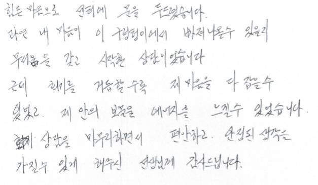
힘든 마음으로 센터의 문을 두드렸습니다. 과연 내 마음이 이 구렁텅이에서 빠져 나올 수 있을지 무서움을 갖고 시작한 상담이었습니다. 근데 회기를 거듭할 수록
제 마음을 다 잡을 수 있었고 제 안의 보물과 에너지를 느낄 수 있었습니다. 상담을 마무리하면서 편안하고 안정된 생각을 가질 수 있게 해주신 선생님께
감사드립니다.^^
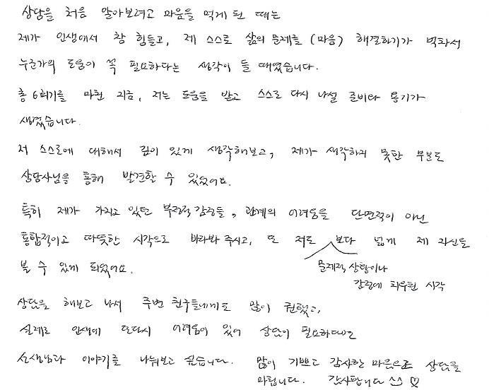
상담을 처음 알아보려고 마음을 먹게 된 때는 제가 인생에서 참 힘들고, 제 스스로 삶의 문제를 해결하기가 벅차서 누군가의 도움이 꼭 필요하다는 생각이 들
때였습니다.
총 6 회기를 마친 지금, 저는 도움을 받고 스스로 다시 나설 준비와 용기가 생겼습니다. 저 스스로에 대해서 깊이 있게 생각해보고, 제가 생각하지 못한 부분도
상담사님을 통해 발견할 수 있었습니다. 특히 제가 가지고 있는 부정적 감정들, 관계의 어려움을 단면적이 아닌 통합적이고 따뜻한 시각으로 바라봐 주시고, 또
저도 문제적 상황이나 감정에 치우친 시각 보다 넓게 제 자신을 볼 수 있게 되었습니다.
상담을 해보고 나서 주변 친구들에게도 많이 권했고, 실제로 인생에 또다시 어려움이 있어 상담이 필요하다면 선생님과 이야기를 나눠보고 싶습니다. 많이 기쁘고
감사한 마음으로 상담을 마칩니다. 감사합니다.
나를 알고 싶어서, 나의 감정과 행동을 이해하고 고치고 싶어서 상담을 했어요. 버겁고.... 그만 두고 싶고.... 즐겁지가 않아서 의욕도 안 나는 게
답답했어요. 이런 내 상태가 어떤건지, 어떤 것을 고쳐나가야 할지 알 수 있었어요.
내가 나를 알고 인정하고 사랑하는 법을 알아갈 수 잇었어요. 늘 밝고 유쾌한 사람이었는데 속은 ... 내가 보는 나는 아니었어요. 나 자신으로 만족스럽고
행복하도록..... 검사와 상담을 받고자 한 첫걸음이 중요한 것 같아요. 차근차근 할 수 있겠지.. 싶어요. 좋아요. 인생에 꼭 필요한 나를 돌아보고 알아가는
시간이에요. 모두에게 꼭 추천해주고 싶어요.!
처음 상담을 하기로 결심한 계기는 가게에서 스트레스를 받다 보니 주변 사람들에게 작은 거 하나까지도 화를 내고 있는 내 모습을 발견해서였다. 처음에 선뜻
상담을 결정한 것이 아니라 받아야 하나 말아야 하나 몇 일 생각을 하다가 용기를 내서 전화를 하고 초기 상담을 시작했다. 처음에는 초기 상담만 받고 나면 끝인
줄 알았는데 병원으로 치면 초기 상담은 진단 밖에 안되서 5회기를 하기로 원장님과 결정했다.
1회기 2회 기를 거쳐가면서 성격테스트를 통해 나의 성격들 중 장, 단점을 알 수 있게 되었다. 일단 내가 모르던 것들과 나의 어느 부분이 일적인 면이나 어떤
상황에서 크게 작용을 하는지 인지 할 수 있다는 것 자체가 나에게는 한 발치 뒤에서 나를 바라볼 수 있게 되었다.
물론 그 상황들이 다시 닥쳐오면 화도나고 짜증도 나지만 그 감정들의 강도나 표현 방법을 달리 할 수 있게 되어서 너무 좋았고 감사한 시간들이었다. 다시 한번
원장님께 감사하고 나의 모습을 조금 더 나은 모습으로 바꿀 수 있게 노력한 나 자신에게도 감사한다.
잠을 제대로 자지 못하고 우울감이 심해 상담을 받게 되었는데, 상담 초기에는 잠깐 잘 자고 우울감이 좀 적었으면 좋겠고, 그래서 몸에 기운이 조금 생겼으면
좋겠다는 생각만 했었어요. 정말 너무 힘들었는데 상담을 받고 나니 잠도 잘 자고, 부정적이고 우울한 생각도 안 하게 되고 여행도 다녀올 수 있을 정도로
에너지가 생겨서 너무 좋습니다.
단순히 증상의 개선뿐만이 아니라 상담을 받으면서 저 스스로 어떤 사람인지 생각해볼 수 있는 시간이 많아서 더 좋았고 제가 생각하던 '나'의 모습이 애매모호하고
흐릿했다면 상담을 받고 난 후에는 내가 어떤 사람인지, 구체적으로 무엇을 선호하고 무엇이 중요한 사람인지 알게 되어서 '나'라는 사람이 이런 사람이라는 것을
명확하게 알게 된 것 같아 더 좋았습니다.
선생님을 만나면서 마음의 힘이 커지고 용기가 생기게 된 것 같습니다. 상담을 더 받고 싶으나 여건이 되지 않아 너무 아쉬워요. 힘든 문제 해결만이 아닌 저를
더 성장시켜 주셔서 감사합니다. 새해 복 많이 받으시고 다음에 또 뵀으면 좋겠습니다.♡
왜.... 이제야 찾게 된 것일까 먼 길을 돌아 돌아 왔습니다. 다른 사람한테나 있을 줄 알았던 겉보기에는 너무나 평범한 저희 가족 관계 아니 저와 엄마 아빠
동생과의 관계가 모든 사람과의 관계에도 계속해서 영향을 미친다는 것을 깨닫고 마음의 큰 짐을 덜었습니다.
가장 큰 돌덩어리를 던져버린 느낌입니다. 제 고민 하나 하나 제가 알지 못했던 그 사랑의 감정을 읽어주시고 해결법, 이렇게 말해야 한다는 예시들이 제 궁금증을
모두 해결해주셔서 항상 인생에 ?만 가득하고 답을 몰랐던 저에게 너무 큰 도움이 되었고 앞으로의 방향을 알려주셨어요. 짧은 시간 동안 많은 것을 깨달아 얻었고
앞으로 발전된 저를 기대하게 됩니다.!
너무 우울해서 살기 싫을 때 마음동네심리상담센터를 찾아왔고 11회기 상담을 마친 지금은 저에게 많은 변화가 있었다는 것이 느껴질 정도 입니다. 타인에게 저의
감정, 제가 생각하고 있는 부분을 표현하는 것이 서툴렀고 표현을 하는 것에 거부감이 느껴졌습니다.
하지만 김명숙 선생님께서는 굉장히 정중하게 저의 기분, 감정들이 어떤지 물어봐 주셨고 그 정중하심에 감동 받아서 저의 내면의 이야기를 할 수 있었던 것
같았습니다. 상담 초기에는 상담이 별 의미가 없다고, 일시적일 뿐이라고 생각했었는데 11회 기를 끝낸 지금 생각해보면 점점 마음 속에 여유가 생겼다는 것이 큰
의미인 것 같습니다.
언제나 올 때마다 웃는 얼굴로 반겨주시는 선생님들 덕분에 저에게 많은 도움이 되었던 것 같습니다 인간 관계에 있어서 어려움이 많았는데 그 어려움을 해결해나갈
수 있는 방법을 알려주셔서 감사합니다. 또, 저의 상담 내용에 같이 웃고, 같이 울어주셔서 감사합니다. 많은 변화 덕분에 매주 상담이 기다려지는 힘들었지만
행복한 3달을 보낸 것 같습니다.